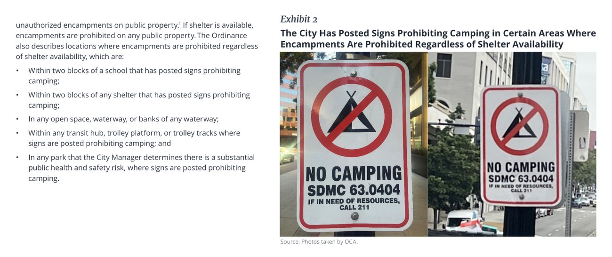
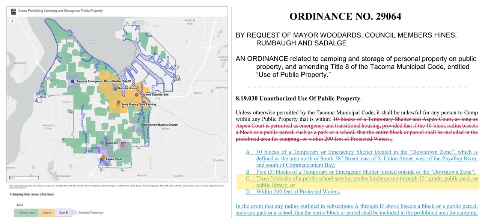
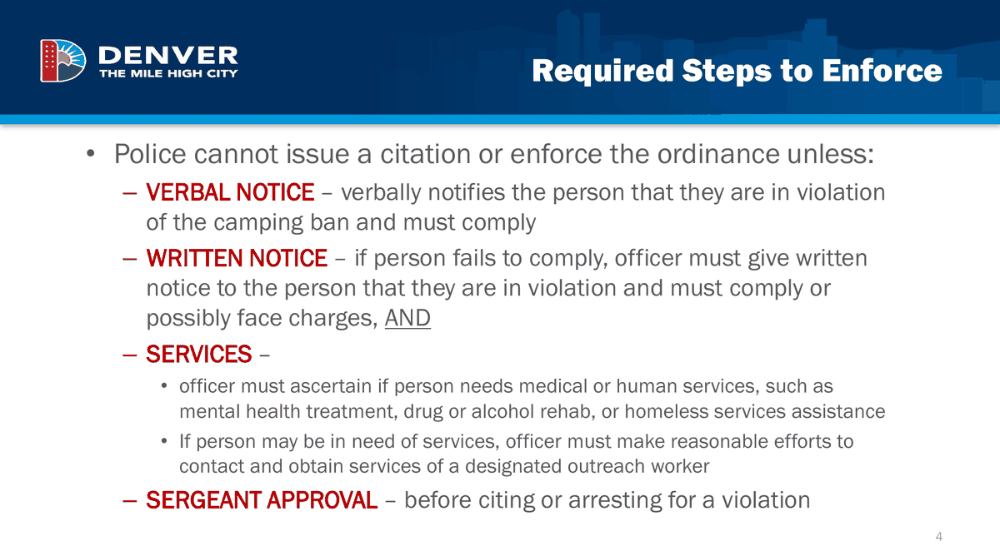
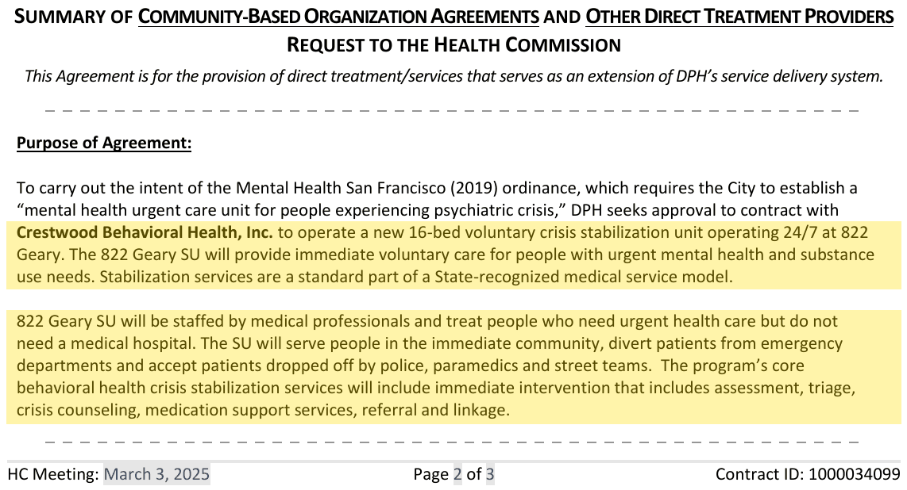

Keep schools, parks and busy sidewalks clear
The short version
- Seattle sweeps, but has no ban behind its sweeps. It removed camps 2,504 times in 2024, about 55 for every 100 people outside, and people come back. Denver, with a citywide ban, cleared about 9 for every 100 and kept the blocks closed.
- Name the places in law, banned at all times. San Diego bans camping near schools, in parks and on transit whether or not shelter is open. Where its ban applies only when shelter is open, it switches off whenever the shelter fills.
- Start with schools. About 110 places near schools and child care have encampment reports, perhaps 250 people estimate. The rooms the mayor already plans could cover them in months. Then playgrounds and parks, then busy sidewalks, as fast as rooms open.
- An offer first, then a ladder. An outreach worker and an officer offer a room, then a spoken warning, a written notice, and only then a ticket, dismissed if the person accepts help. Denver wrote 14 camping tickets in all of 2023.
- Give police somewhere to take people. At San Francisco's 822 Geary, a police drop-off takes about two minutes instead of six hours. Seattle's crisis center won't open until late 2027 at the earliest.
- Each path is real: housing (a room with a door), recovery (same-day addiction medicine) and court (a stay-out order or a ticket), in that order.
What Seattle does today
Seattle has one rung: the sweep. Its Unified Care Team removes camps, most with no notice or shelter offer required, and people move a few blocks and come back.
Seattle's trap has been treating rooms as a condition for enforcing at all. Rooms never arrive fast enough, so the only tool left is the same-day sweep. Public places are a much smaller job than the whole city, and the part neighbors care about most. Our public spaces page counts the encampments and open-air drug zones near schools, parks and busy sidewalks, by council district.
Name the places in law
A pledge to keep public places clear needs a law that says which places. The model is San Diego's Unsafe Camping Ordinance, in effect since July 2023.
- Banned at all times: within two blocks of a school or shelter, in open space and along waterways, at transit hubs and along trolley tracks, and in parks the city designates, whether or not a shelter bed is open. Several zones apply only where signs are posted.
- Banned only when shelter is available: everywhere else. Police can't ticket at night.
- What the city auditor found in April 2026: downtown cleared, but people sleeping outside citywide didn't go down, and the conditional half of the ban switches off when the shelters are full.

For Seattle. Write the schools, playgrounds, parks and busy sidewalks into an ordinance as always-banned places, and leave the rest of the city out of it. The ordinance names where camping isn't allowed. It doesn't approve camping everywhere else; outreach, not removal, is the response there.
Other cities in Washington

- Tacoma passed Ordinance No. 29064 in October 2025: no camping within two blocks of a public K–12 school, public park or public library, within 5 or 10 blocks of shelters, or within 200 feet of protected waters. The city publishes a map of every zone.
- Spokane's 1,000-foot ban around schools, parks and child care was struck down by the state Supreme Court in April 2025, but only because it was passed by citizen initiative. The court left open whether enforcing without shelter is allowed. So Seattle's ordinance has to come from the council, not the ballot.
- Burien passed 500-foot buffers around schools, parks and libraries. The Coalition on Homelessness sued; the case is close to what the pledge describes.
Start with schools, then parks, then busy sidewalks
Waiting for a room for everyone means waiting most of a decade: even with new rooms on schedule, Seattle will have about 1,500 rooms for 5,600 or more people outside through 2028. So open the places zone by zone, as fast as there are rooms.
| Zone | Why first | About how many |
|---|---|---|
| 1. Schools and child care | Kids walk past every day | ~110 places, ~250 people estimate |
| 2. Playgrounds, sports fields and the park paths people use | Where families spend their time | See the public spaces page |
| 3. Busy sidewalks, transit and libraries | Everyone uses them | See the public spaces page |
- About 45% of places with encampment reports are near a park, school, library or child care center, so clearing public places means rooms for about 1,500–1,800 people estimate.
- The mayor's planned 960 beds alone could cover the school zones in months.
- Keep a reserve. Hold 10–15% of new rooms empty for offers in the zones being opened. Denver had more than 3,000 group shelter beds to fall back on; Seattle's are full, so it has to build that slack on purpose.
- Say which zones opened each quarter, and how many rooms were set aside for them (pledge item 3).
An offer first, then a ladder
Written into the ordinance, so every step can be counted. Since the Supreme Court's Grants Pass decision in 2024, federal law doesn't require a shelter bed before enforcing. The first step still offers the best place that exists that day, a room whenever there is one.
| Step | Camping | Public drug use | When |
|---|---|---|---|
| 0. Posted | Signs mark the place as no camping, no drug use | Same signs | When the law takes effect |
| 1. Offer | An outreach worker and an officer arrive together and offer a room, or the best shelter available that day | The same team offers treatment that day, including medication for opioid addiction, plus a room if the person is outside | Within 72 hours of a report |
| 2. Spoken warning | “Camping is not allowed here.” The offer is repeated | “Using here is not allowed.” The treatment offer is repeated | Same visit |
| 3. Written notice | A dated notice to move. Belongings will be stored, not thrown away | A written warning with the treatment referral | 48 hours later for camping; the next contact for drug use |
| 4. Citation or arrest | A ticket, dismissed if the person accepts shelter or treatment | Citation or arrest with referral to diversion, charged only if diversion is declined | When the notice runs out; the third contact for drug use |
| 5. Hold | The place goes on a daily patrol list. Anyone who returns starts again at step 2 | Same, plus stay-out orders for repeat use at the same place | Ongoing |
The deadlines (72 hours, 48 hours) are our suggestions, not Denver's numbers. Dealing gets no ladder: sales at a public place mean arrest and prosecution.
Denver's law, and how rarely it needed the last rung

Denver's camping ban requires, before any citation, a spoken notice, then a written notice, a check on whether the person needs medical or human services (and an attempt to reach an outreach worker if so), and a sergeant's approval. The maximum penalty is 60 days in jail. Nothing in the law requires an available bed.
- In 2023 Denver police logged 297 spoken warnings, 3 written warnings and 14 camping tickets under the ban.
- Most enforcement was something else. Homeless-related warnings and citations rose from 2,066 in 2022 to 2,892 in 2023, and about 88% were under the sidewalk-obstruction rule, not the camping ban.
Did Denver wait for a room before enforcing?
No. “No enforcement until there's a room for everyone” has been Seattle's reason to wait. Denver ran two kinds of camp clearing at once:
- “Resolutions” offered everyone on a by-name list a room, then fenced and patrolled the site.
- “Closures” offered no housing. At 22nd and Stout in August 2023 the city said it had no units. At 8th and Navajo in April 2024 about 140 people were cleared with no shelter offered, and the next day police arrested 11 of them for camping a few blocks away, after offering only a group shelter bed.
- Its fallback was real: more than 3,000 group shelter beds a night, plus cold-weather capacity for 600 adults and 200 families.
- Its own limit: Mayor Johnston promised no large sweeps at or below freezing without an indoor offer, except for serious health or safety risks, and vetoed the council's stricter version in February 2024.
What Seattle should take from it. Denver enforced while it was building, and put its rooms where it was enforcing. Its worst offer on a bad day was a real bed. Seattle's is often nothing, which is why the zones open only as fast as rooms do.
Hold the block
A cleared place stays clear only if someone comes back. Denver fenced resolved sites, patrolled them and kept them closed. Seattle's sweeps don't, and the median person displaced was about 700 meters away a year later.
- Every cleared place goes on a daily patrol list, checked by civilian outreach staff, not officers.
- Anyone who returns starts again at the spoken warning, with the offer repeated.
- Report each quarter how many cleared places stayed clear (pledge item 3).
Somewhere police can take people
A ladder runs on officer time. Today an officer with someone in crisis, or high in public, can take them to jail or the emergency room, and either can take hours.

King County already has one: the Connections center in Kirkland, open since August 2024, with a police entrance and drop-offs of about seven minutes, but police bring only about 13% of its admissions. Seattle's levy-funded crisis center at 1145 Broadway opens at the end of 2027 at the earliest.
For Seattle. Don't wait for late 2027. Under the emergency, open an interim police drop-off unit at San Francisco's scale (about 16 beds) in a building the city or county already owns, paid from the crisis care levy and Medicaid. Report minutes per drop-off each quarter.
The path to recovery
41% of King County's unsheltered people reported a substance use disorder in 2026. The pledge doesn't pay for a new treatment system. Treatment money already exists in levies voters approved: the county's $1.25B Crisis Care Centers levy through 2032, its behavioral health sales tax, Medicaid and opioid settlement money. The job is to put a same-day treatment offer on every rung.
- What exists today: walk-in addiction medicine at the ORCA post-overdose center (8 slots plus walk-ins), buprenorphine from the fire department, and diversion through LEAD, which offers case management instead of charges.
- What's thin: about 13 city-funded detox beds and 16 secure detox beds for involuntary holds in the whole county.
- Why same day matters: after an overdose, methadone cut the risk of dying of an opioid overdose by 59% and buprenorphine by 38%. Only 11–17% of people got either.
The path to court
Court is the last rung, used rarely, but it has to be real or the warnings mean nothing. Decide now what happens on the fifth contact, in this order:
- A stay-out order from the property owner. The school district or Parks issues a trespass order for that property. It doesn't need a prosecutor, and it's how Denver's trespass enforcement worked.
- A citation that is dismissed if the person accepts a room or treatment.
- Booking. King County lifted its limits on misdemeanor bookings in February 2025, at about $279 a bed-day. Budget 20–40 jail beds a day, about $2–4M a year estimate.
The weak link is filing charges. The city attorney is elected separately and sends drug cases to diversion first; camping isn't prosecuted today. The council can't make the city attorney prosecute, so the ordinance should put most of the force in the stay-out order and the property owner. The next city attorney race is in 2029.
A path for people in vehicles
About 1,300 of Seattle's 5,600 people outside live in vehicles. A tiny home isn't the right offer for most of them. San Francisco built a ladder for vehicles in 2025:
- Count first. Outreach found about 500 lived-in RVs and gave permits to the people already living in them.
- A two-hour limit for large vehicles citywide. Permit holders are exempt for six months if they work with housing services.
- Tickets, then towing for everyone else.
- A way out: buybacks, housing vouchers, and a shelter that takes RV residents.
Lived-in large vehicles fell more than 42% by the city's count, to about 315 in May 2026. The weak spots: housing came slowly, and many people couldn't get a permit because their vehicle didn't run or its registration had lapsed.
On October 20, 2026, Seattle's council passed the same structure 6–3. In early November Mayor Wilson vetoed the permit program, citing its $10M cost and the risk of pushing people from RVs into tents. Her alternative keeps safe lots (about 200 spaces by 2027) and outreach but has no parking limits. Back the council's version, and add buybacks and permits for vehicles that don't run, with a safe lot open before towing starts.
Officer time
Seattle has about 930–980 deployable officers, 489 of them on patrol, a number flat since 2023. The sweeps team already loses days for lack of police support.
- Checking about 800 public places daily would take about 55–65 officers' worth of time; the ~110 school places about 8 estimate.
- So civilians run steps 0–3 (signs, offers, warnings, notices) and the daily patrol list. A small dedicated police squad handles step 4.
- The Unified Care Team's existing $29.9M becomes the ladder team's budget.
Safety valves
- No clearing at or below freezing without an indoor offer. That was Denver's mayor's own rule.
- Store belongings, don't throw them away.
- Count where people go, so the quarterly report shows displacement as well as clearings.
- Be honest about the transition. Some people will camp in less-used places, like industrial edges, instead of next to a school. That's the tradeoff, and the report should show it.
Legal risks to check
- Grants Pass (2024) settled the federal question: cities can enforce camping bans without a shelter bed. Denver said it “doesn't change Denver's approach.”
- State courts are still a risk. Washington courts can rule under the state constitution, as a 2023 ruling against Seattle's sidewalk-obstruction rule did. Seattle's appeal is pending.
- HB 2489, a state bill backed by the ACLU that would bar enforcing camping bans without adequate alternative shelter, died in House Rules in 2026. Expect it back in January 2027.
- The Burien lawsuit over 500-foot buffers around schools, parks and libraries is the closest test of what the pledge describes.
What other cities teach
Notes
- Our Denver vs. Seattle analysis, with its sources: Seattle's 2,504 removals in 2024 and Denver's cleanups per 100 people outside, from the cities' own records; the 700-meter displacement figure.
- San Diego Municipal Code §63.0401–63.0406, the Unsafe Camping Ordinance. sandiego.gov; CalMatters, April 2024 calmatters.org.
- San Diego Office of the City Auditor, Performance Audit of the City's Response to Homeless Encampments Since the Unsafe Camping Ordinance (OCA-26-07), April 2026, page 6. sandiego.gov
- City of Tacoma, Encampment Policies and Procedures, with the map of areas prohibiting camping tacoma.gov; Ordinance No. 29064, §8.19.030, passed October 21, 2025 cityoftacoma.legistar.com.
- San Diego City Auditor, Unsafe Camping Ordinance audit highlights, April 2026. sandiego.gov
- Denver Gazette, June 13, 2024, on homeless-related warnings and citations denvergazette.com; camping-ban contacts in 2023 from our Denver plan for Seattle.
- Mission Local, April 2025, on 822 Geary's opening, the six-hours-to-two-minutes figure and outcomes. missionlocal.org
- City of San Francisco on the fentanyl state of emergency ordinance and the stabilization center. sf.gov
- San Francisco Department of Public Health, memo to the Health Commission on the Crestwood Behavioral Health contract for 822 Geary, March 3, 2025 ($9,063,537 with contingency, March 1, 2025 to June 30, 2026). sf.gov
- KQED on the RESET center. kqed.org
- Seattle's sidewalk-obstruction rule and the pending appeal (Kitcheon): our Denver plan for Seattle, with its sources.
- Denver city attorney training on the camping ban, DRMC §38-86.2, Colorado Municipal League, 2020. cml.org
- KCRHA coordinated entry performance data, July 2026. kcrha.org
- Axios, January 6, 2026, on City Attorney Evans's diversion memo. axios.com
- KUOW, August 19, 2026, on stay-out-of-drug-area orders. kuow.org
- Our other cities page, with its sources.
- Our Denver plan for Seattle, sections on whether Denver waited for a room, what Seattle is missing, how many rooms and enforcing before there are enough rooms, with their sources (Tacoma, Spokane and Burien; the public-places share; police and detox capacity).
- Supreme Court of the United States, City of Grants Pass v. Johnson, June 28, 2024. supremecourt.gov
- CBS Colorado, August 4, 2023. cbsnews.com
- Colorado Politics, February 5, 2024, on the freezing-weather veto. coloradopolitics.com
- King County DCHS on the Kirkland crisis center. dchsblog.com
- King County Crisis Care Centers levy. kingcounty.gov
- KCRHA, 2026 Point-in-Time Count executive report. kcrha.org
- Cascade PBS, August 2025, on the ORCA overdose treatment center. cascadepbs.org
- Larochelle et al., Annals of Internal Medicine, 2018. nih.gov
- Seattle Times on the end of misdemeanor booking restrictions. seattletimes.com
- Our methodology page: about 5,600 people outside within city limits, January 2026, about 1,300 in vehicles.
- KQED on San Francisco's RV law. kqed.org; ABC7 on enforcement abc7news.com.
- GrowSF, June 12, 2026, on tents and RVs. growsf.org
- PubliCola, October 21, 2026 publicola.com; KUOW, October 20, 2026 kuow.org; the veto: Seattle Times, November 2026, via our other cities page.
- Seattle City Council central staff on police staffing, June 9, 2026. westseattleblog
- The $29.9M Unified Care Team: our budget page.
- Axios, January 22, 2026, on HB 2489. axios.com